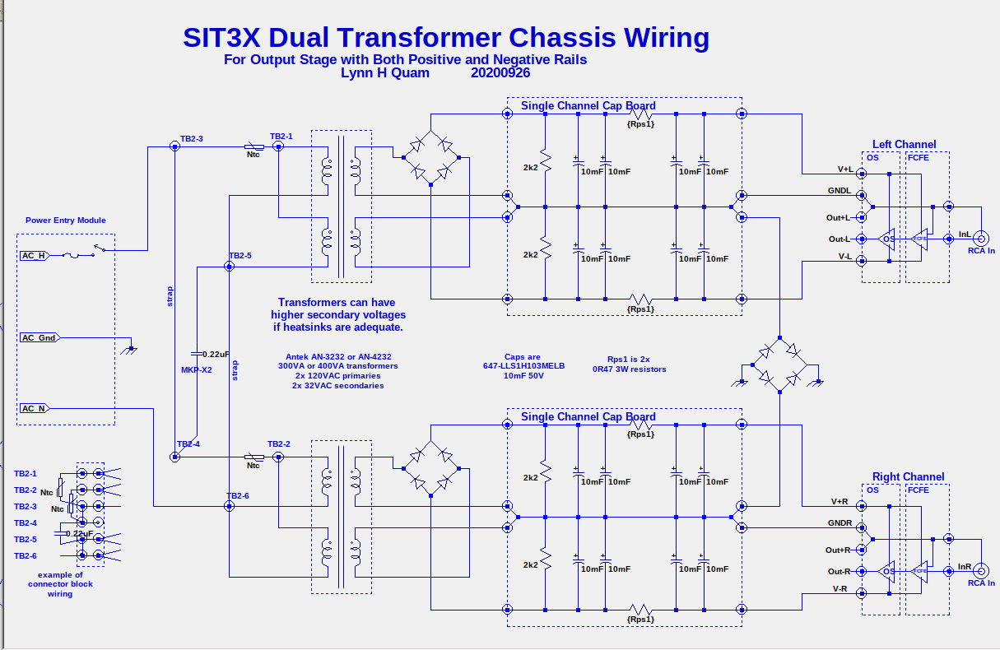
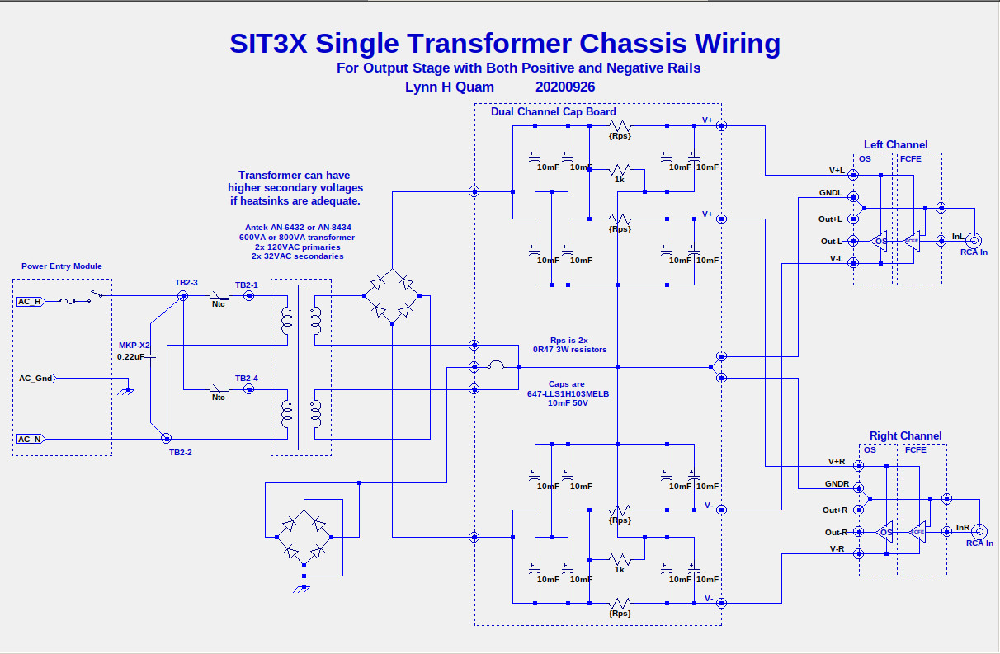
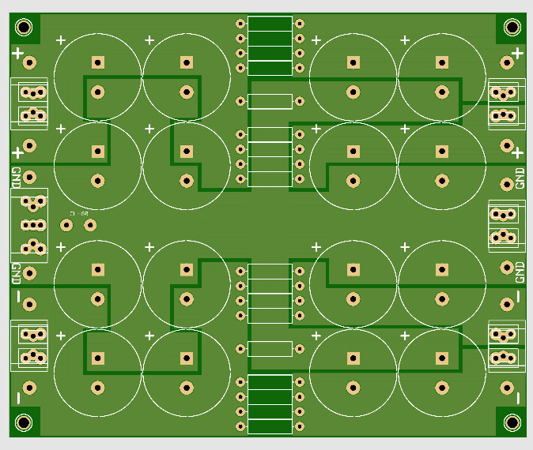

Power Supplies
Two types of power supplies configurations for a stereo amplifier
are discussed here, using two types of CRC filter PCBs.
- Independent PS per channel: Two transformers with two
secondaries each or a single transformer with four secondaries.
- Shared PS with independent 2nd stage of CRC filter:
Single transformer with two secondaries, bridge rectifier, 1st
stage of CRC, followed by independent second stages of CRC.
Independent PS per channel:

Bill of Materials (per channel): single-channel-PS-BOM
Single Channel Capacitor Board:
The single channel capacitor board was fabricated with some artwork
errors with the CRC resistor solder pads, requiring rework to cut
away some solder pads on one side of the board or the other.
No functionality to the board was lost. Due to this
modification, some resistor leads must be soldered on the top side
of the board rather than the bottom.
Shared PS with independent 2nd stage of CRC filter:

Dual Channel Capacitor Board:
